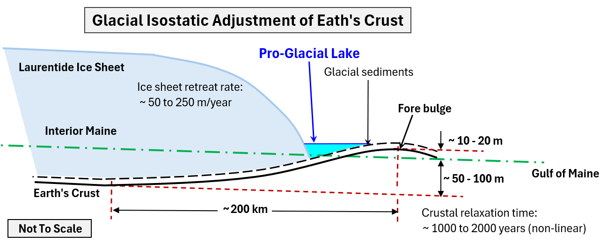

This short introduction to glacial geomorphology focuses on the glacial geomorphic features that are common in the
Upper Narraguagus River valley.
Table of Contents
- Glacial geomorphic environments
- Sediments and in-channel bars
- Etc.

Figure GG.1 - Glacial Geomorphic Environments.
The environments
about the formation

Figure GG.2 - Fluvial vs. Pro-Glacial Fluvial Sediments.
The sediments that form in-channel geomorphic units, such as rivers bars, can help identify the environments
in which the bars were formed. Longitudinal, transverse and diagonal bars all have disinct sorting patterns within the bar.
The size (gravel, cobbles or boulders) of the coursest sediments and their shape (rounded or subangular) indicates the environment
(pro-glacial-fluvial, para-glacial-fluvial or fluvial) in which they were formed. For additional information about the formation
and sediment distribution of common in-channel bar types see the following.
Longitudinal Bars
Transverse (Linguoid) Bars
Diagonal (Diamond) Bars

Figure GG.3 - Glacial Isostatic Adjustments.
The weight of the Laurentide ice sheet depressed the earth’s crust beneath it resulting in changes of drainage system in
regions of relatively flat topography, such as the headwaters of the Narraguagus River. This process is shown in Figure GG.3, where
the dash-dot green line represents the current average ground slope in the region, which slopes towards the Gulf of Maine. The occurrence
of pro-glacial lakes and associated lacustrine sediments was dependent upon several factors, including, the depth of glacial sediments and
the extent that glacial melt waters carved drainage channel through the sediments (see Figure GG.1) or natural dams formed that conisted of
sediments and isolated ice blocks.
There is an abandoned channel in the North-West corner of Eagle Lake that indicates this portion of the watershed once
flowed Northward into the Union River watershed
SubArea_1_Overview. The flattened grade of this portion of the
watershed would have resulted in very wet terrain providing favorable environments for the formation of peat wetlands
SubArea_1_Overview.
See Sanborn, L.H., et al., 2025, Glacial isostatic adjustment shifted early Holocene river hydrology in Maine, U.S.A: Geology, v. 53, p. 446-450
for additional information.